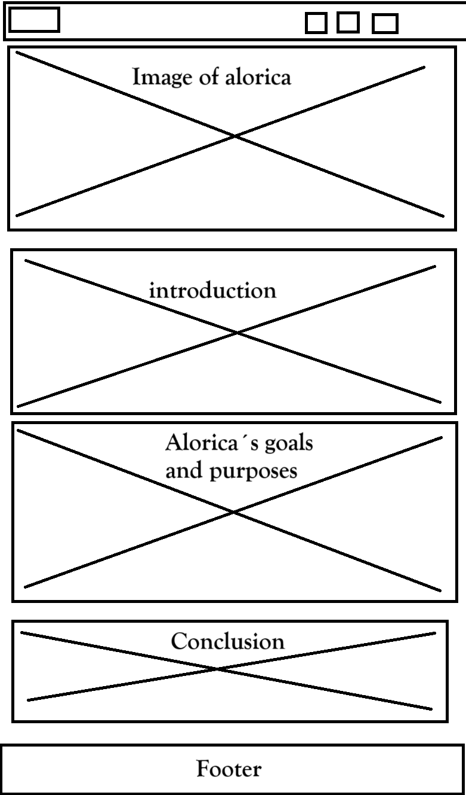
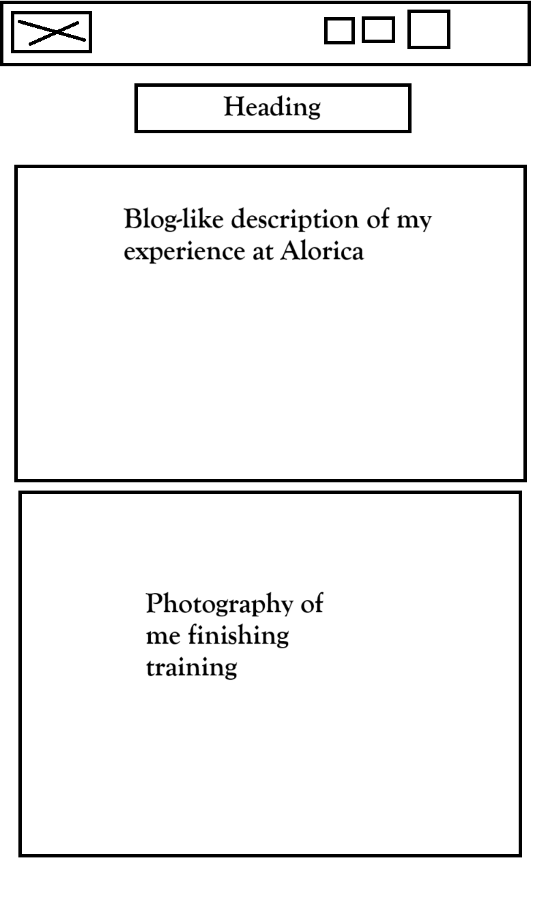
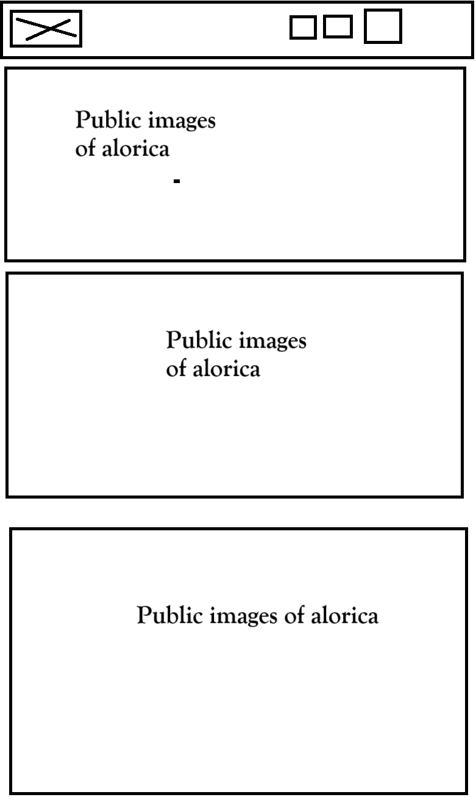

Customer Care with Alorica
Alorica is a large company that provides outsourced customer services solutions that I work at.
Purpose
This site about Alorica will provide clear and concise insights into the company’s mission, goals, and approach to employee well-being, along with my personal experiences working at Alorica.
Scenarios
•What is Alorica focused in?
•How do Alorica's employees feel working there? Would this be a workplace I would enjoy working in?
Colors
This site has one principal color which is blue, this is going to mainly be in the header and footer, but also as background of specific elements that need a dark background color, and the secondary colors will be orange, that is going to be the background color of the main screen, with also white that is going to be for text background. I chose these colors because are the colors of Alorica.
Typography
I will use two types of fonts in this course.
This will be the font for the headers
This will be the font for the paragraphs


